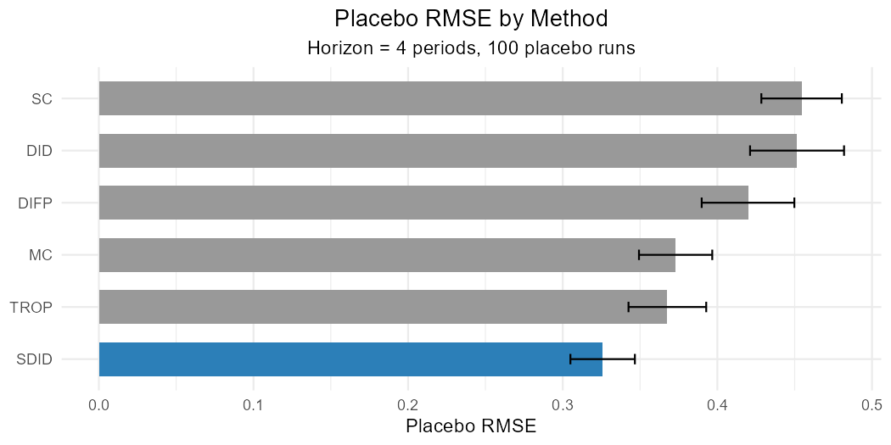
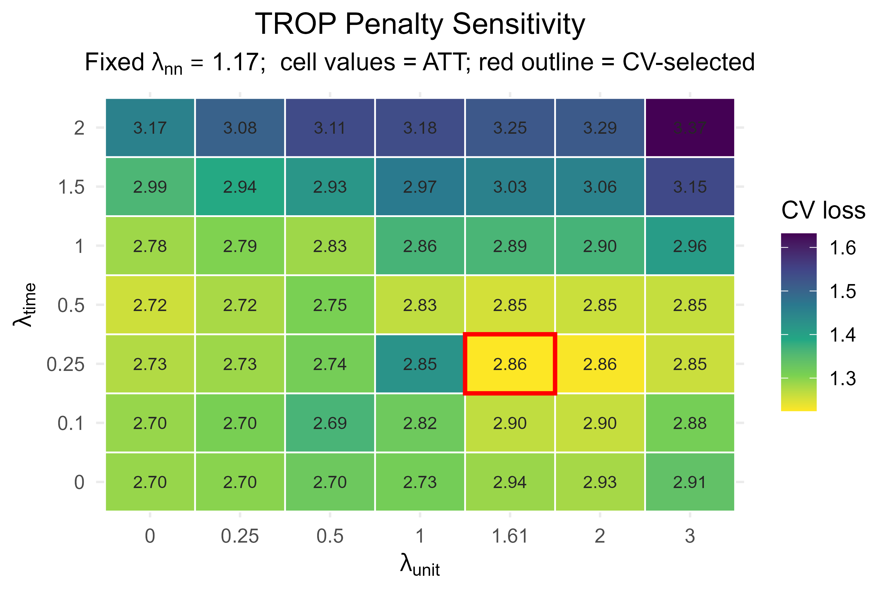
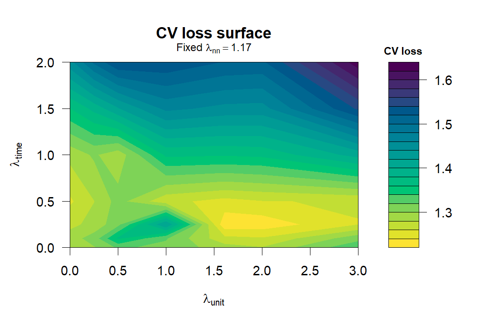
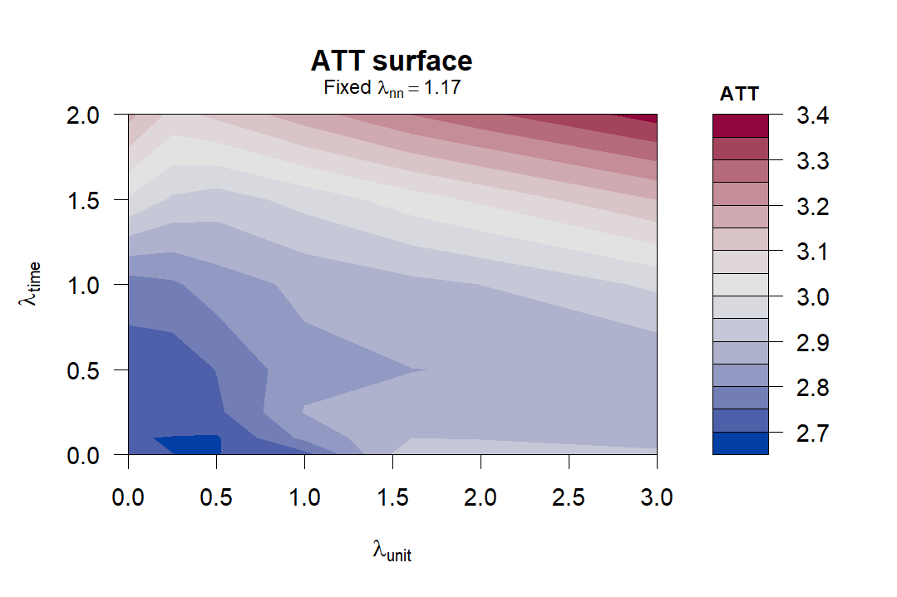

Note:
cfcompareis an independent R package. This is not officially endorsed or maintained by the authors of the TROP article (Athey, Imbens, Qu & Viviano, 2026). Official TROP software by the authors includes the Python packagetrop(zhaonanq/TROP-Estimator) and the Stata command (justinwaddy/TROP). Please cite the original TROP paper when using the TROP estimator. See Citation for more details.
cfcompare implements the triply robust panel estimator (TROP) and puts it in a common R workflow with DID/TWFE, synthetic control, matrix completion, synthetic DID, and DIFP. This package enables not just to estimate TROP, but also to compare various ATT estimators on the same schema.
Use cfcompare when you want to:
- run several ATT estimators on one binary-treatment panel with
panel_compare(); - get a shared tidy ATT table and shared plotting methods;
- evaluate estimators by held-out RMSE with
panel_rmse(); - inspect TROP tuning through lambda grids with
trop_sensitivityandplot_trop_surfaces(for CV-loss and ATT surfaces).
Note: all plots and tables shown in this README are based on a model sample dataset, and they are provided solely as examples of the visualizations that can be created with this package.
Installation
# install.packages("pak")
pak::pak("takuma1102/cfcompare")You can also install from R-universe. This package will be submitted to CRAN as well down the line.
install.packages(
"cfcompare",
repos = c("https://takuma1102.r-universe.dev", "https://cloud.r-project.org")
)Most of the core native engines run without optional estimator packages. Install synthdid, gsynth, augsynth, or did for the wrapped methods you plan to use. gsynth and did are on CRAN; synthdid and augsynth are on GitHub only:
Quick start
library(cfcompare)
# Compare multiple estimators.
cmp <- panel_compare(
df,
outcome = "y", treatment = "w", unit = "id", time = "t",
methods = c("DID", "SDID", "SC", "MC", "DIFP", "TROP"),
se = "bootstrap", # You can also choose jackknife or "none" for running this faster.
# covariates = c("x1", "x2"),
anchor = "pooled", # faster method
# or "per-cell" (more accurate; in accordance with the original paper)
# or "auto" (choosing "per-cell" or "pooled" depending on the number of treated cells)
)
cmp$att # tidy ATT table, one row per method
autoplot(cmp) # forest plot of ATT estimates and intervals (see below for an example plot)
Supported estimators
| Method | Engine |
panel_compare() default? |
Notes |
|---|---|---|---|
TROP |
native R | yes | low-rank + two-way FE outcome model with unit/time weights |
DID |
native R | yes | two-way fixed effects |
SC |
synthdid |
yes | skipped if synthdid is unavailable or the design is unsupported |
MC |
native R | yes | nuclear-norm matrix completion |
SDID |
synthdid |
yes | skipped if synthdid is unavailable or the design is unsupported |
DIFP |
native R | yes | Doudchenko-Imbens-Ferman-Pinto estimator: demeaned SC with intercept |
gsynth |
gsynth |
no | optional interactive-fixed-effects / MC-style engine |
augsynth |
augsynth |
no | optional augmented synthetic control engine |
CS |
did |
no | Callaway–Sant’Anna; requires an absorbing staggered treatment |
By default, panel_compare() runs TROP, DID, SC, MC, SDID, and DIFP. Use methods = to specify an explicit set, or exclude = to drop one method from the default set. Optional engines whose package is missing, or whose design requirements are not met (e.g., in terms of covariates), are skipped with a message while the remaining methods still run.
Overview: what cfcompare can do
cfcompare has basic functions for estimating the TROP estimator (the official Python and Stata projects are referenced). It also adds an R-native comparison and diagnostic layer around TROP:
| Goal | Entry point | Output |
|---|---|---|
| Compare multiple ATT estimators | panel_compare() |
cf_comparison with a common cf_att_tbl, fits, panel data, and counterfactuals |
| Compare held-out predictive performance | panel_rmse() |
ranked RMSE table; this is separate from TROP tuning cross-validation |
| Track estimation RMSE vs design size |
rmse_curve() / rmse_curves()
|
sqrt(E[(tau_hat - tau)^2]) vs N, T, #treated, or #post, with a known true ATT |
| Inspect TROP penalty sensitivity |
trop_sensitivity() + autoplot()
|
lambda grid with CV loss and ATT at each grid point |
| Plot CV-loss / ATT surfaces | plot_trop_surfaces() |
separate full-width CV-loss and ATT surface plots; returns surface matrices invisibly |
| Audit penalty components | trop_ablation() |
table moving from full TROP toward MC and DID by constraining penalties |
| Compare inference choices | compare_se_modes() |
one ATT estimate with bootstrap, jackknife, and/or placebo uncertainty rows |
| Reuse fitted counterfactuals | counterfactual_matrix() |
common N x T estimated untreated-outcome matrix interface |
Held-out RMSE comparison
panel_rmse() compares estimators by how well they predict held-out outcomes. The default metric = "placebo" repeatedly assigns a placebo block to control units and scores the resulting zero-effect placebo ATT.
r <- panel_rmse(
df, outcome = "y", treatment = "w", unit = "id", time = "t",
methods = c("DID", "SDID", "SC", "MC", "DIFP", "TROP"),
horizon = 4, n_pseudo = 6, n_runs = 100, seed = 1
)
r # ranked table: method, rmse, rmse_se, engine, note
autoplot(r) # see below for an example plot
metric = "prediction" scores per-cell counterfactual prediction error.

For quick diagnostics on large panels, reduce the outer repetition counts, such as n_runs, and use lighter TROP controls via trop_control(n_cv_cells = , cv_cycles = , max_iter = , workers = ).
Note: This is a predictive error on held-out cells, not estimation error against a known effect. It is a different quantity from the estimation RMSE
sqrt(E[(tau_hat - tau)^2])reported byrmse_curves()andrmse_curve()(for a single-dimension plot) over Monte Carlo replications with a known true ATT. These two can rank methods differently.
TROP diagnostics
Run a single TROP fit when you need the selected penalties, per-treated-cell effects, or the fitted untreated counterfactual matrix.
fit <- trop(df, "y", "w", "id", "t")
fit$lambda # CV-selected (time, unit, nn) penalties
fit$tau_cells # per-treated-cell effects
counterfactual_matrix(fit) # fitted N x T untreated-outcome matrix
autoplot(fit) # synthetic-control-style trajectory; see below
Inspect the TROP penalty surface by sweeping any two of the three penalties (time, unit, nn) and holding the third fixed.
g <- trop_sensitivity(
df, "y", "w", "id", "t",
axes = c("unit", "time"), # You can also choose "nn" for lambda_nn
anchor = "pooled" #
)
autoplot(g) # compact ggplot2 heatmap (see below)
surfaces <- plot_trop_surfaces(g, which = "both", ask = FALSE) (see below)
surfaces$cv_loss # matrix behind the CV-loss surface
surfaces$att # matrix behind the ATT surface

Other targeted diagnostics are available when needed.
Use trop_ablation when you want to check how RMSEs change in accordance with the change in lambda penalties. (See also Table 5 in the original paper.)
trop_ablation(df, "y", "w", "id", "t") # see below
Use compare_se_modes when you want to compare bootstrap and jackknife standard errors.
compare_se_modes(df, "y", "w", "id", "t", se = c("bootstrap", "jackknife")) # see below
For event-study plots, use trop_event_study.
trop_event_study(fit, se = "bootstrap")
For placebo test relabeling control units as pseudo-treated, use trop_placebo_test() (penalties are held fixed).
pt <- trop_placebo_test(
fit, B = 500L, alternative = "two.sided"
)
autoplot(pt) # histogram of the null; observed ATT (red solid line) and 0 (dashed); see below.
Designs and inference
The treatment column is the active 0/1 treatment indicator for each unit-time cell. The TROP diagnosis handles block, staggered, and non-absorbing treatment patterns under the same schema. By contrast, SDID and SC are block-design methods and are skipped otherwise. CS is opt-in and requires absorbing staggered treatment.
Native estimators support se = "bootstrap", "jackknife", and "none" where applicable. These are practical resampling choices for the R workflow; use the TROP paper for formal inference conditions.
How cfcompare compares with the paper and the official Python / Stata software
The TROP engine in this package is written in base R. For correctness checks, it has been compared with the official Python trop package on exactly comparable weighted-TWFE sample datasets, using trop_control(svd = "full"), and the results agree to numerical tolerance.
How the TROP paper, the official Python package, the official Stata command and cfcompare handle the main implementation choices – weight anchoring, cross-validation, standardization, inference – and how that has changed across releases is tracked, with dated comparison tables and notes on this package’s choices, in the article TROP implementations compared: the paper, Python, Stata and R.
More details
For more details, use the package help topics:
?panel_compare
?panel_rmse
?trop
?trop_sensitivity
?trop_ablation
?compare_se_modesA walk-through is in the Getting started article, and every function is documented in the reference on the package website.
Status
Experimental. The output schema is intended to be stable, but wrapped estimator packages can change their internal objects. Pin package versions in production code.
Citation
cfcompare is an independent package to implement TROP. If you use the TROP estimator, please cite the original paper:
- Athey, S., Imbens, G. W., Qu, Z., & Viviano, D. (2026). Triply Robust Panel Estimators. Journal of Applied Econometrics, 1–16. doi:10.1002/jae.70061.
Also cite the underlying packages for any wrapped estimators you use (synthdid, gsynth, augsynth, and did).